Setting tags¶
Most of the setting tags have corresponding command-line options (Command options).
For specifying real and reciprocal points, fractional values
(e.g. 1/3) are accepted. However fractional values must not
have space among characters (e.g. 1 / 3) are not allowed.
Basic tags¶
DIM¶
The supercell is created from the input unit cell. When three integers are specified, a supercell elongated along axes of unit cell is created.
DIM = 2 2 3
In this case, a 2x2x3 supercell is created.
When nine integers are specified, the supercell is created by multiplying the supercell matrix 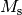 with the unit cell. For example,
DIM = 0 1 1 1 0 1 1 1 0
the supercell matrix is
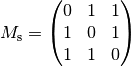
where the rows correspond to the first three, second three, and third
three sets of numbers, respectively. When lattice parameters of unit
cell are the column vectors of 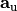,
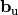, and 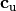,
those of supercell,  ,
, 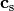, are
determined by,
,
, 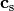, are
determined by,
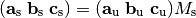
Be careful that the axes in POSCAR is defined by three row
vectors, i.e., 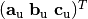.
PRIMITIVE_AXIS¶
PRIMITIVE_AXIS = 0.0 0.5 0.5 0.5 0.0 0.5 0.5 0.5 0.0
Likewise,
PRIMITIVE_AXIS = 0 1/2 1/2 1/2 0 1/2 1/2 1/2 0
The primitive cell for building the dynamical matrix is created by multiplying primitive-axis matrix 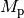. Let the matrix as,
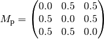
where the rows correspond to the first three, second three, and third three sets of numbers, respectively.
When lattice parameters of unit cell (set by POSCAR) are the
column vectors of ,
, and ,
those of supercell, 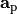,
 ,
,  , are
determined by,
, are
determined by,
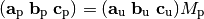
Be careful that the axes in POSCAR is defined by three row
vectors, i.e., .
ATOM_NAME¶
Chemical symbols
ATOM_NAME = Si O
The number of chemical symbols have to be same as that of the numbers
in the sixth line of POSCAR.
Chemical symbols read by phonopy are overwritten by those written in
POSCAR. See POSCAR examples. In WIEN2k mode,
you don’t need to set this tag, i.e., chemical symbols are read from
the structure file.
EIGENVECTORS¶
When this tag is ‘.TRUE.’, eigenvectors are calculated. With -p
option, partial density of states are calculated.
MASS¶
This tag is not necessary to use usually, because atomic masses are automatically set from the chemical symbols.
Atomic masses of a primitive cell are overwritten by the values
specified. The order of atoms in the primitive cell that is defined by
PRIMITIVE_AXIS tag can be shown using -v option. It must be
noted that this tag does not affect to the symmetry search.
For example, when there are six atoms in a primitive cell, MASS is
set as follows
MASS = 28.085 28.085 16.000 16.000 16.000 16.000
MAGMOM¶
Symmetry of spin such as collinear magnetic moments is considered
using this tag. The number of values has to be equal to the number of
atoms in the unit cell, not the primitive cell or supercell. If this
tag is used with -d option (CREATE_DISPLACEMENTS tag),
MAGMOM file is created. This file contains the MAGMOM
information of the supercell used for VASP. Unlike MAGMOM in VASP,
* can not be used, i.e., all the values (the same number of times
to the number of atoms in unit cell) have to be explicitly written.
MAGMOM = 1.0 1.0 -1.0 -1.0
Unit conversion factor¶
frequency_conversion_factor¶
Unit conversion factor of frequency from input values to your favorite
unit is specified. The default value is that to convert to THz. The
default conversion factors for wien2k, abinit, pwscf, and
elk are 3.44595, 21.49068, 108.9708, and 154.1079
respectively. These are determined following the physical unit systems
of the calculators. How to calcualte these conversion factors is
explained at About physical unit conversion.
When calculating thermal property, the factor to THz is required. Otherwise the calculated thermal properties have wrong units. In the case of band structure plot, any factor can be used, where the frequency is simply shown in the unit you specified.
FREQUENCY_CONVERSION_FACTOR = 521.471
Displacement creation tags¶
CREATE_DISPLACEMENTS¶
Supercells with displacements are created. This tag is used as the post process of phonon calculation.
CREATE_DISPLACEMENTS = .TRUE.
DIM = 2 2 2
DISPLACEMENT_DISTANCE¶
Finite atomic displacement distance is set as specified value when
creating supercells with displacements. The default displacement
amplitude is 0.01 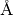, but when the wien2k or
abinit option is specified, the default value is 0.02 Bohr.
DIAG¶
When this tag is set .FALSE., displacements in diagonal directions
are not searched, i.e. all the displacements are along the lattice
vectors. DIAG = .FALSE. is recommended if one of the lattice
parameter of your supercell is much longer or much shorter than the
other lattice parameters.
PM¶
This tag specified how displacements are found. When PM = .FALSE.,
least displacements that can calculate force constants are found. This
may cause less accurate result. When PM = .TRUE., all the
displacements that are opposite to the least displacements are found.
The default setting is PM = AUTO. Plus-minus displacements are
considered with this tag. If the plus and minus displacements are
symmetrically equivalent, only the plus displacement is found. This
may be in between .FALSE. and .TRUE.. You can check how it
works to see the file DISP where displacement directions on atoms
are written.
Band structure tags¶
BAND, BAND_POINTS¶
BAND gives sampling band paths. The reciprocal points are
specified in reduced coordinates. The given points are connected for
defining band paths. When comma , is inserted between the points,
the paths are disconnected.
BAND_POINTS gives the number of sampling points including the path
ends. The default value is BAND_POINTS = 51.
An example of three paths, (0,0,0) to (1/2,0,1/2), (1/2,1/2,1) to (0,0,0), and (0,0,0) to (1/2,1/2,1/2), with 101 sampling points of each path are as follows:
BAND = 0 0 0 1/2 0 1/2, 1/2 1/2 1 0 0 0 1/2 1/2 1/2
BAND_POINTS = 101
BAND_LABELS¶
Labels specified are depicted in band structure plot at the points of
band segments. The number of labels has to correspond to the
number of band paths specified by BAND plus one.
BAND = 1/2 0 1/2 0 0 0 1/2 1/2 1/2
BAND_LABELS = X \Gamma L

The colors of curves are automatically determined by matplotlib. The same color in a band segment shows the same kind of band. Between different band segments, the correspondence of colors doesn’t mean anything.
BAND_CONNECTION¶
With this option, band connections are estimated from eigenvectors and
band structure is drawn considering band crossings. In sensitive
cases, to obtain better band connections, it requires to increase
number of points calculated in band segments by the BAND_POINTS tag.
BAND = 1/2 0 1/2 0 0 0 1/2 1/2 1/2
BAND_POINTS = 101
BAND_CONNECTION = .TRUE.

Mesh sampling tags¶
Mesh sampling tags are used commonly for calculations of thermal properties and density of states.
MP, MESH¶
MP numbers give uniform meshes in each axis. As the default
behavior, the center of mesh is determined by the Monkhorst-Pack
scheme, i.e., for odd number, a point comes to the center, and for
even number, the center is shifted half in the distance between
neighboring mesh points.
Examples of an even mesh with  center in two ways,
center in two ways,
MP = 8 8 8
GAMMA_CENTER = .TRUE.
MP = 8 8 8
MP_SHIFT = 1/2 1/2 1/2
MP_SHIFT¶
MP_SHIFT gives the shifts in direction along the corresponding
reciprocal axes (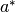,  , 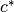). 0 or 1/2
(0.5) can be used as these values. 1/2 means the half mesh shift with
respect to neighboring grid points in each direction.
, 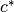). 0 or 1/2
(0.5) can be used as these values. 1/2 means the half mesh shift with
respect to neighboring grid points in each direction.
GAMMA_CENTER¶
Instead of employing the Monkhorst-Pack scheme for the mesh sampling,
center mesh is used. The default value is .FALSE..
GAMMA_CENTER = .TRUE.
WRITE_MESH¶
With a dense mesh, with eigenvectors, without mesh symmetry, sometimes
its output file mesh.yaml or mesh.hdf5 can be huge. However
when those files are not needed, e.g., in (P)DOS calculation,
WRITE_MESH = .FALSE. can disable to write out those files. With
(P)DOS calculation, DOS output files are obtained even with
WRITE_MESH = .FALSE.. The default setting is .TRUE..
WRITE_MESH = .FALSE.
Density of states (DOS) tags¶
Density of states (DOS) is calcualted either with smearing method (default) or tetrahedron method. The physical unit of horizontal axis is that of frequency that the user employs, e.g., THz, and that of vertical axis is {no. of states}/({unit cell} x {unit of the horizontal axis}). If the DOS is integrated over the frequency range, it will be 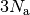 states, where 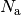 is the number of atoms in the unit cell.
DOS¶
This tag enables to calculate DOS. This tag is automatically set when
PDOS tag or -p option.
DOS = .TRUE.
DOS_RANGE¶
DOS_RANGE = 0 40 0.1
Total and partial density of states are drawn with some parameters. The example makes DOS be calculated from frequency=0 to 40 with 0.1 pitch.
PDOS¶
PDOS = 1 2, 3 4 5 6
By setting this tag, EIGENVECTORS = .TRUE. and MESH_SYMMETRY =
.FALSE. are automatically set. PDOS tag controls how elements
of eigenvectors are added. Each value gives the atom index in
primitive cell. , separates the atom sets. Therefore in the
example, atom 1 and 2 are summarized as one curve and atom 3, 4, 5,
and, 6 are summarized as the other curve.
The projection is applied along arbitrary direction using
PROJECTION_DIRECTION tag.
PROJECTION_DIRECTION¶
Eigenvectors are projected along the direction specified by this tag. Projection direction is specified in reduced coordinates, i.e., with respect to a, b, c axes.
PDOS = 1, 2
PROJECTION_DIRECTION = -1 1 1
XYZ_PROJECTION¶
PDOS is calculated using eigenvectors projected along x, y, and z
Cartesian coordinates. The format of output file partial_dos.dat
becomes different when using this tag, where phonon-mode-frequency and
x, y, and z components of PDOS are written out in the order:
frequency atom1_x atom1_y atom1_z atom2_x atom2_y atom2_z ...
With -p option, three curves are drawn. These correspond to
sums of all projections to x, sums of all projections to y, and sums
of all projections to z composents of eigenvectors, respectively.
XYZ_PROJECTION = .TRUE.
SIGMA¶
This tag specifies the smearing width. The unit is same as that used for phonon frequency. The default value is the value given by the difference of maximum and minimum frequencies divided by 100.
SIGMA = 0.1
TETRAHEDRON¶
Tetrahedron method is used instead of smearing method.
DEBYE_MODEL¶
By setting .TRUE., DOS at lower phonon frequencies are fit to a
Debye model. By default, the DOS from 0 to 1/4 of the maximum phonon
frequencies are used for the fitting. The function used to the fitting
is 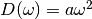 where  is the parameter and
the Debye frequency is 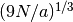 where
is the parameter and
the Debye frequency is 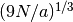 where  is the
number of atoms in unit cell. Users have to unserstand that this is
not a unique way to determine Debye frequency. Debye frequency is
dependent on how to parameterize it.
is the
number of atoms in unit cell. Users have to unserstand that this is
not a unique way to determine Debye frequency. Debye frequency is
dependent on how to parameterize it.
DEBYE_MODEL = .TRUE.
Thermal displacements¶
TDISP, TMAX, TMIN, TSTEP¶
Mean square displacements projected to Cartesian axes as a function of
temperature are calculated from the number of phonon excitations. The
usages of TMAX, TMIN, TSTEP tags are same as those in
thermal properties tags. The result is
writen into thermal_displacements.yaml. See the detail of the
method, Mean square displacement.
The projection is applied along arbitrary direction using
PROJECTION_DIRECTION tag (PROJECTION_DIRECTION).
TDISP = .TRUE.
PROJECTION_DIRECTION = 1 1 0
TDISPMAT, TMAX, TMIN, TSTEP¶
Mean square displacement matricies are calculated. The difinition is
shown at Mean square displacement. The result is
writen into thermal_displacement_matrices.yaml where six matrix
elements are given in the order of xx, yy, zz, yz, xz, xy.
TDISPMAT = .TRUE.
CUTOFF_FREQUENCY¶
Frequencies lower than this cutoff frequency are not used to calculate thermal displacements.
Specific q-points¶
QPOINTS¶
When QPOINTS = .TRUE., QPOINTS file in your working directory
is read, and the q-points written in this file are calculated.
WRITEDM¶
WRITEDM = .TRUE.
Dynamical matrices  are written into
are written into qpoints.yaml
in the following 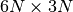 format, where N is the number of atoms in
the primitive cell.
The physical unit of dynamical matrix is [unit of force] / ([unit of
displacement] * [unit of mass]), i.e., square of the unit of phonon
frequency before multiplying the unit conversion factor
(see frequency_conversion_factor).
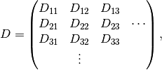
and 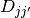 is
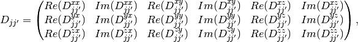
where j and j’ are the atomic indices in the primitive cell. The
phonon frequencies may be recovered from qpoints.yaml by writing a
simple python script. For example, qpoints.yaml is obtained for
NaCl at 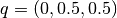 by
phonopy --dim="2 2 2" --pa="0 1/2 1/2 1/2 0 1/2 1/2 1/2 0" --qpoints="0 1/2 1/2" --writedm
and the dynamical matrix may be used as
#!/usr/bin/env python
import yaml
import numpy as np
data = yaml.load(open("qpoints.yaml"))
dynmat = []
dynmat_data = data['phonon'][0]['dynamical_matrix']
for row in dynmat_data:
vals = np.reshape(row, (-1, 2))
dynmat.append(vals[:, 0] + vals[:, 1] * 1j)
dynmat = np.array(dynmat)
eigvals, eigvecs, = np.linalg.eigh(dynmat)
frequencies = np.sqrt(np.abs(eigvals.real)) * np.sign(eigvals.real)
conversion_factor_to_THz = 15.633302
print frequencies * conversion_factor_to_THz
Non-analytical term correction¶
NAC¶
Non-analytical term correction is applied to dynamical
matrix. BORN file has to be prepared in the current directory. See
BORN (optional) and Non-analytical term correction.
NAC = .TRUE.
Q_DIRECTION¶
This tag is used to activate NAC at
 , i.e. practically
-point. Away from -point, this setting is
ignored and the specified q-point is used as the q-direction.
, i.e. practically
-point. Away from -point, this setting is
ignored and the specified q-point is used as the q-direction.
MP = 1 1 1
NAC = .TRUE.
Q_DIRECTION = 1 0 0
Group velocity¶
GROUP_VELOCITY¶
Group velocities at q-points are calculated by using this tag. The group velocities are written into a yaml file corresponding to the run mode in Cartesian coordinates. The physical unit depends on physical units of input files and frequency conversion factor, but if VASP and the default settings (e.g., THz for phonon frequency) are simply used, then the physical unit will be Angstrom THz.
GROUP_VELOCITY = .TRUE.
Technical details are shown at Method.
GV_DELTA_Q¶
The reciprocal distance used for finite difference method is specified. The default value is 1e-4.
GV_DELTA_Q = 0.01
Symmetry¶
SYMMETRY¶
P1 symmetry is enforced to the input unit cell by setting SYMMETRY = .FALSE.
MESH_SYMMETRY¶
Symmetry search on the reciprocal sampling mesh is disabled by setting
MESH_SYMMETRY = .FALSE..
FC_SYMMETRY¶
This tag is used to symmetrize force constants partly. The number of iteration of the following set of symmetrization applied to force constants is specified. The default value is 0. In the case of VASP, this tag is usually unnecessary to be specified.
FC_SYMMETRY = 1
From the translation invariance condition,
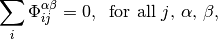
where i and j are the atom indices, and  and
and
 are the Catesian indices for atoms i and j,
respectively. Force constants are symmetric in each pair as
are the Catesian indices for atoms i and j,
respectively. Force constants are symmetric in each pair as
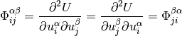
These symmetrizations break the symmetry conditions each other. Be
careful that the other symmetries of force constants, i.e., the
symmetry from crystal symmetry or rotational symmetry, are broken to
force applying FC_SYMMETRY.
Force constants¶
FORCE_CONSTANTS¶
FORCE_CONSTANTS = READ
There are three values to be set, which are READ and WRITE,
and .FALSE.. The default is .FALSE.. When FORCE_CONSTANTS =
READ, force constants are read from FORCE_CONSTANTS file. With
FORCE_CONSTANTS = WRITE, force constants calculated from
FORCE_SETS are written to FORCE_CONSTANTS file.
The file format of FORCE_CONSTANTS is shown
here.
Create animation file¶
ANIME_TYPE¶
ANIME_TYPE = JMOL
There are V_SIM, ARC, XYZ, JMOL, and POSCAR
settings. Those may be viewed by v_sim, gdis, jmol
(animation), jmol (vibration), respectively. For POSCAR, a set
of POSCAR format structure files corresponding to respective
animation images are created such as APOSCAR-000,
APOSCAR-001,....
There are several parameters to be set in the ANIME tag.
ANIME¶
The format of ``ANIME`` tag was modified after ver. 0.9.3.3.
For v_sim¶
ANIME = 0.5 0.5 0
The values are the q-point to be calculated. An animation file of
anime.ascii is generated.
For the other animation formats¶
Phonon is only calculated at point. So q-point is not
necessary to be set.
anime.arc, anime.xyz, anime.xyz_jmol, or APOSCAR-*
are generated according to the ANIME_TYPE setting.
ANIME = 4 5 20 0.5 0.5 0
The values are as follows from left:
- Band index given by ascending order in phonon frequency.
- Magnitude to be multiplied. In the harmonic phonon calculation, there is no amplitude information obtained directly. The relative amplitude among atoms in primitive cell can be obtained from eigenvectors with the constraint of the norm or the eigenvectors equals one, i.e., number of atoms in the primitive is large, the displacements become small. Therefore this has to be adjusted to make the animation good looking.
- Number of images in one phonon period.
- (4-6) Shift of atomic points in reduced coordinate in real space. These
values can be omitted and the default values are
0 0 0.
For anime.xyz_jmol, the first and third values are not used,
however dummy values, e.g. 0, are required.
Create modulated structure¶
MODULATION¶
The MODULATION tag is used to create a crystal structure with
displacements along normal modes at q-point in the specified supercell
dimension.
Atomic displacement of the j-th atom is created from the real part of the eigenvectors with amplitudes and phase factors as
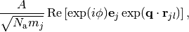
where  is the amplitude,
is the amplitude,  is the phase,
is the number of atoms in the supercell specified
in this tag and 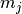 is the mass of the j-th atom,
is the phase,
is the number of atoms in the supercell specified
in this tag and 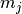 is the mass of the j-th atom,
 is the q-point specified, 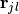
is the position of the j-th atom in the l-th unit cell, and
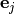 is the j-th atom part of eigenvector. Convention of
eigenvector or dynamical matrix employed in phonopy is shown in
Dynamical matrix.
is the q-point specified, 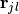
is the position of the j-th atom in the l-th unit cell, and
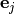 is the j-th atom part of eigenvector. Convention of
eigenvector or dynamical matrix employed in phonopy is shown in
Dynamical matrix.
If several modes are specified as shown in the example above, they are
overlapped on the structure. The output filenames are
MPOSCAR.... Each modulated structure of a normal mode is written
in MPOSCAR-<number> where the numbers correspond to the order of
specified sets of modulations. MPOSCAR is the structure where all
the modulations are summed. MPOSCAR-orig is the structure without
containing modulation, but the dimension is the one that is specified.
Some information is written into modulation.yaml.
Usage¶
The first three (nine) values correspond to supercell dimension
(supercell matrix) like the CELL_FILENAME tag. The following
values are used to describe how the atoms are modulated. Multiple sets
of modulations can be specified by separating by comma ,. In each
set, the first three values give a Q-point in the reduced coordinates
in reciprocal space. Then the next three values are the band index
from the bottom with ascending order, amplitude, and phase factor in
degrees. The phase factor is optional. If it is not specified, 0 is
used.
Before multiplying user specified phase factor, the phase of
the modulation vector is adjusted as the largest absolute value,
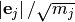, of element of
3N dimensional modulation vector to be real. The complex modulation
vector is shown in modulation.yaml.
MODULATION = 3 3 1, 1/3 1/3 0 1 2, 1/3 1/3 0 2 3.5
MODULATION = 3 3 1, 1/3 1/3 0 1 2, 1/3 0 0 2 2
MODULATION = 3 3 1, 1/3 1/3 0 1 1 0, 1/3 1/3 0 1 1 90
MODULATION = -1 1 1 1 -1 1 1 1 -1, 1/2 1/2 0 1 2
Characters of irreducible representations¶
IRREPS¶
Characters of irreducible representations (IRs) of phonon modes are
shown. For this calculation, a primitive cell has to be used. If the
input unit cell is a non-primitive cell, it has to be transformed to a
primitive cell using PRIMITIVE_AXIS tag.
The first three values gives a q-point in reduced coordinates to be calculated. The degenerated modes are searched only by the closeness of frequencies. The frequency difference to be tolerated is specified by the fourth value in the frequency unit that the user specified.
IRREPS = 0 0 0 1e-3
Only the databases of IRs for a few point group types at the
point are implemented. If the database is available,
the symbols of the IRs and the rotation operations are shown.
SHOW_IRREPS¶
Irreducible representations are shown along with character table.
IRREPS = 1/3 1/3 0
SHOW_IRREPS = .TRUE.
LITTLE_COGROUP¶
Show irreps of little co-group (point-group of wavevector) instead of little group.
IRREPS = 0 0 1/8
LITTLE_COGROUP = .TRUE.